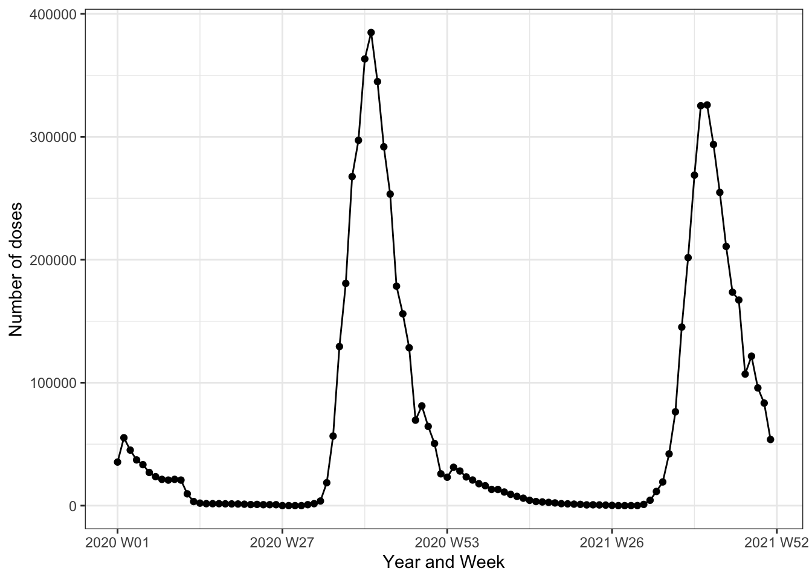
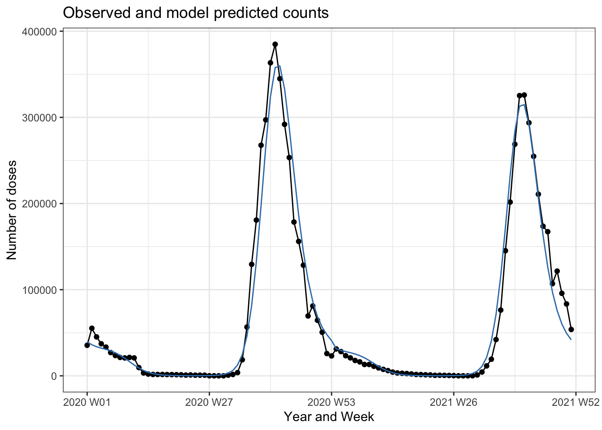
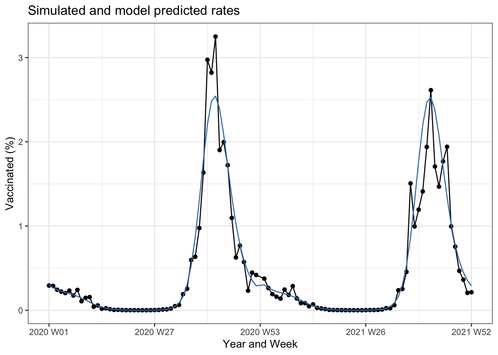
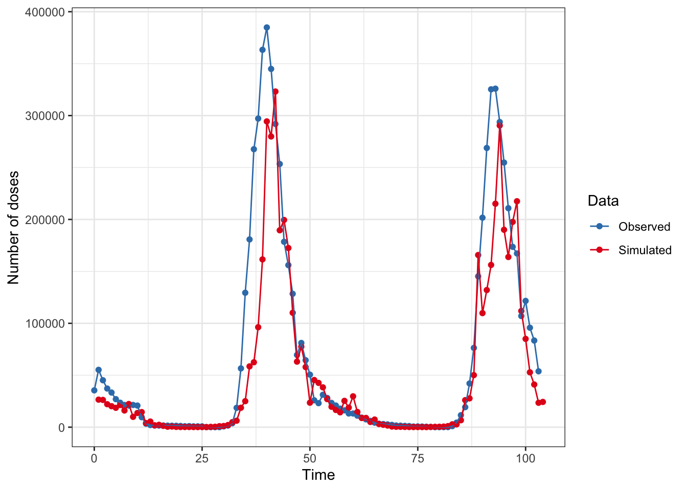
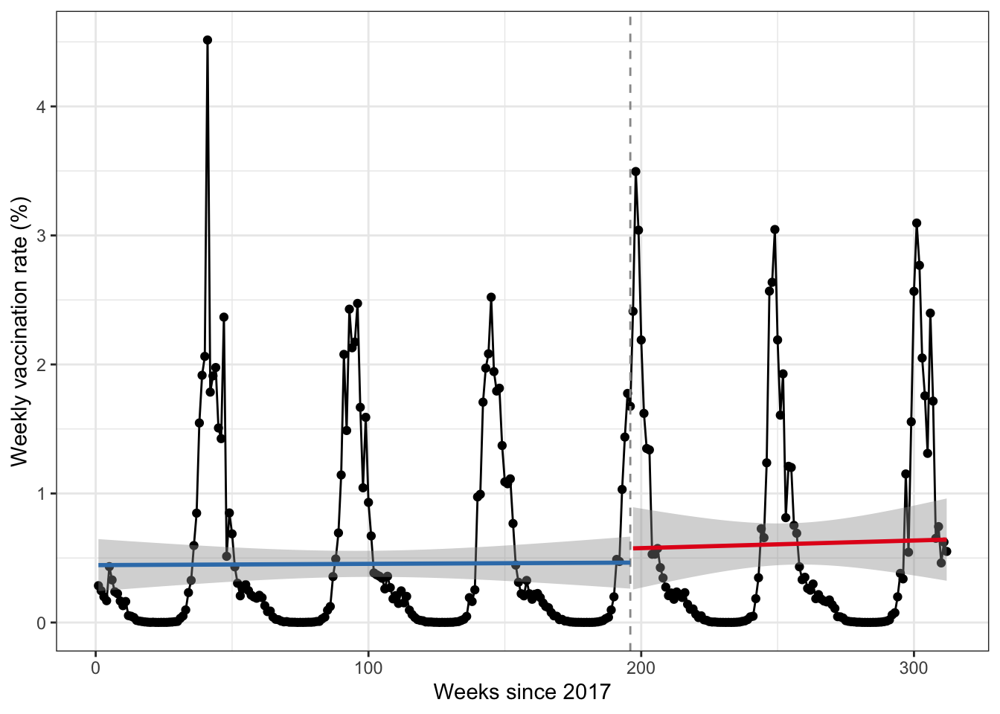

The basic idea for simulating for power starts with building a realistic dataset that mimics the actual data we will use, then vary the potential effect size over a plausible range to see whether, given our data and assumptions, we are likely to be able to detect a true effect with reasonable precision.
Let’s load the required packages for the analysis:
Let’s start with looking at actual vaccination data from Michigan’s Flu Dashboard. Here we will read in the data
Code
# read in datad <-read_excel(here("data", "past-season.xlsx"),col_names =c("county", "lhd", "agegp", "facility","doses", "date"), skip =1)kable(head(d, n =10)) %>%kable_styling()
county
lhd
agegp
facility
doses
date
Alcona
DHD-2
13 through 17 years
Adolescent
1
2019-09-21
Alcona
DHD-2
13 through 17 years
Adolescent
1
2019-09-28
Alcona
DHD-2
13 through 17 years
Adolescent
1
2019-11-02
Alcona
DHD-2
13 through 17 years
Adolescent
1
2019-11-02
Alcona
DHD-2
13 through 17 years
Adolescent
1
2019-11-09
Alcona
DHD-2
13 through 17 years
Adolescent
1
2019-11-09
Alcona
DHD-2
13 through 17 years
Adolescent
1
2019-11-16
Alcona
DHD-2
13 through 17 years
Adolescent
1
2019-11-23
Alcona
DHD-2
13 through 17 years
Adolescent
1
2019-11-23
Alcona
DHD-2
13 through 17 years
Adolescent
1
2019-12-21
Now let’s limit the data to two full years (2020, and 2021) and aggregate the number of doses by week:
Code
# convert to weekly counts of vaccine dosesweekly <- d %>%select(doses,date) %>%# limit to two full yearsfilter(date>="2020-01-01"& date<="2021-12-31") %>%mutate(week =week(date),weekyr =yearweek(date),month =month(date),event =make_yearweek(year = 2021L, week = 1L,week_start =getOption("lubridate.week.start", 1) ),tsevent = weekyr - event,post =if_else(tsevent>=0,1,0),time =as.integer(weekyr -min(weekyr))) %>%group_by(weekyr) %>%summarise(ndoses =sum(doses),tsevent =mean(tsevent),post =mean(post),time =mean(time),week =mean(week),month =mean(month)) %>%mutate(fyear =year(weekyr),fseason =if_else(week <27, paste(fyear-1, fyear, sep ="-"),paste(fyear, fyear +1, sep ="-")))kable(head(weekly, n =10)) %>%kable_styling()
weekyr
ndoses
tsevent
post
time
week
month
fyear
fseason
2020 W01
35446
-53 weeks
0
0
1
1
2020
2019-2020
2020 W02
55215
-52 weeks
0
1
2
1
2020
2019-2020
2020 W03
45182
-51 weeks
0
2
3
1
2020
2019-2020
2020 W04
37190
-50 weeks
0
3
4
1
2020
2019-2020
2020 W05
33342
-49 weeks
0
4
5
2
2020
2019-2020
2020 W06
26984
-48 weeks
0
5
6
2
2020
2019-2020
2020 W07
23560
-47 weeks
0
6
7
2
2020
2019-2020
2020 W08
21375
-46 weeks
0
7
8
2
2020
2019-2020
2020 W09
20775
-45 weeks
0
8
9
2
2020
2019-2020
2020 W10
21372
-44 weeks
0
9
10
3
2020
2019-2020
Seasonal patterns
Let’s look at a simple plot of the number of doses given each week, noting that there are no denominators in the data provided by the Flu Dashboard:
Code
# simple plotweekly %>%ggplot(aes(x = weekyr, y=ndoses)) +geom_point() +geom_line() +theme_bw() +scale_y_continuous(labels =~format(.x, scientific =FALSE)) +labs(x ="Year and Week", y ="Number of doses")

There is strong evidence of seasonality in these data, but these patterns can be captured through the use of flexible modeling of time. There are many options, but let’s use a Poisson regression with harmonic terms to capture the seasonal variation. We will two pairs of sine/cosine terms. In addition, since the Poisson model makes the strong assumption that the mean and variance are equal, we will check for overdispersion and, if noted, will use robust standard errors.
Code
# Poisson model with harmonic terms# note no offset as not provide in datasetma <-glm(ndoses ~ post + time +harmonic(week,2,52.25), family=poisson, data=weekly)check_overdispersion(ma)
# Overdispersion test
dispersion ratio = 4382.417
Pearson's Chi-Squared = 425094.411
p-value = < 0.001
There is definitely evidence of overdispersion here, which is given further evidence by the large differences in conventional (‘iid’) and robust standard errors.
Let’s look at our how our simple model with time does capturing the underlying patterns in the actual Michigan data:
Code
# plot with predictions vs. actualweekly %>%add_predictions(ma, type ="response") %>%ggplot(aes(x = weekyr, y = ndoses)) +geom_point() +geom_line() +theme_bw() +geom_line(aes(x = weekyr, y = pred), color ="#377eb8") +scale_y_continuous(labels =~format(.x, scientific =FALSE)) +labs(x ="Year and Week", y ="Number of doses") +ggtitle("Observed and model predicted counts")

Not bad! This model seems pretty reasonable for capturing the seasonal nature of vaccination data, so we will use these harmonic parameters to simulate data that we can experiment on to estimate our power.
Simulating actual data
Let’s start by trying to recreate the Michigan data for 2020 and 2021. As noted above the Dashboard data did not include denominators, but we have done so here, approximating the Michigan population of around 9-10 million with some slow growth over time. We also, for the time being, ignore any overall trend in vaccinations over time to focus in on being able to capture the seasonality.
Code
# set seed for reproducibilityset.seed(20230926)## simulated data for same 2-year periodtib <-tibble(week =rep(seq(from =1, to =52, by =1), 2),year =rep(2020:2021, each =52),time =seq(from =1, to=length(week), by =1),post =if_else(year >=2021, 1, 0),tsince =if_else(post==1, time -52, 0),u_x =rnorm(length(week)),# estimate = ifelse(post == 1, time - min(time), 0),pop100 =90000+ (900000*0.00025* time) ) %>%mutate(lambda =9+ (0.00* time) + (0* post) + (0* post * tsince) +-1.9*sin(2* pi * week /52.25) +0.38*sin(2* pi *2* week /52.25) +2.65*cos(2* pi * week /52.25) +-1.28*cos(2* pi *2* week /52.25) +0.25* u_x,lambda_o =exp((lambda -11.5) +log(pop100)),doses =rpois(length(week), exp(lambda)),doses2 =rpois(length(week), lambda_o),rate = doses / pop100)kable(head(tib, n =10)) %>%kable_styling()
week
year
time
post
tsince
u_x
pop100
lambda
lambda_o
doses
doses2
rate
1
2020
1
0
0
-0.2685856
90225
10.183141
24178.120
26509
24137
0.2938099
2
2020
2
0
0
0.0756831
90450
10.181142
24189.990
26250
24101
0.2902156
3
2020
3
0
0
-0.3798935
90675
10.003745
20308.236
22117
20077
0.2439151
4
2020
4
0
0
-0.5344829
90900
9.916343
18654.794
20196
18554
0.2221782
5
2020
5
0
0
-0.6614896
91125
9.838794
17305.534
18648
17477
0.2046420
6
2020
6
0
0
0.0795638
91350
9.968340
19747.722
21352
19487
0.2337384
7
2020
7
0
0
-0.7327040
91575
9.686637
14936.315
16061
15003
0.1753863
8
2020
8
0
0
1.0443146
91800
10.017202
20838.749
22282
20742
0.2427233
9
2020
9
0
0
-1.5221852
92025
9.216498
9379.796
9934
9263
0.1079489
10
2020
10
0
0
0.5112006
92250
9.512680
12643.998
13649
12609
0.1479566
Now we can fit a similar model to our simulated data and compare with the actual data to see how things shape up. We’ll do the same check for overdispersion, which we tried to simulate as well. Below is a table that compares the actual Michigan data for 2020-2021 with our simulated dataset.
Code
ms <-glm(doses ~ post + time +harmonic(week, 2, 52.25), family = poisson, data=tib)check_overdispersion(ms)
# Overdispersion test
dispersion ratio = 3692.509
Pearson's Chi-Squared = 358173.384
p-value = < 0.001
Code
# comparison of count models for actual vs.# simulated datamodelsummary(list("Observed"= ma, "Simulated"= ms,"Observed"= ma, "Simulated"= ms),vcov =list("iid", "iid", "HC3", "HC3"),gof_omit =".*", output ="kableExtra") %>%add_header_above(c(" "=1, "Conventional SE"=2, "Robust SE"=2))
Conventional SE
Robust SE
Observed
Simulated
Observed
Simulated
(Intercept)
9.329
9.200
9.329
9.200
(0.003)
(0.003)
(0.220)
(0.161)
post
−0.171
0.233
−0.171
0.233
(0.004)
(0.004)
(0.301)
(0.264)
time
0.001
−0.005
0.001
−0.005
(0.000)
(0.000)
(0.006)
(0.005)
harmonic(week, 2, 52.25)1
−1.903
−1.854
−1.903
−1.854
(0.002)
(0.002)
(0.097)
(0.087)
harmonic(week, 2, 52.25)2
0.376
0.214
0.376
0.214
(0.002)
(0.002)
(0.115)
(0.125)
harmonic(week, 2, 52.25)3
2.650
2.512
2.650
2.512
(0.003)
(0.003)
(0.175)
(0.140)
harmonic(week, 2, 52.25)4
−1.276
−1.253
−1.276
−1.253
(0.001)
(0.002)
(0.093)
(0.098)
As expected, we have also created data that are seasonally overdispersed. The coefficients and standard errors for the harmonic terms are reasonably similar.
Because we have denominators in our simulated dataset, we can run a Poisson model that is likely to be more similar to what we will estimate in practice, so we include the log of the population as an offset term, so we can parameterize this model with the vaccine rate rather than the number of doses as the outcome.
Code
# model including offsetmso <-glm(doses2 ~ post + time +harmonic(week, 2, 52.25) +offset(log(pop100)), family = poisson, data=tib)modelsummary(list("Conventional SE"= mso,"Robust SE"= mso),vcov =list("iid", "HC3"),gof_omit =".*")
Conventional SE
Robust SE
(Intercept)
−2.272
−2.272
(0.003)
(0.164)
post
0.250
0.250
(0.004)
(0.265)
time
−0.005
−0.005
(0.000)
(0.005)
harmonic(week, 2, 52.25)1
−1.853
−1.853
(0.002)
(0.087)
harmonic(week, 2, 52.25)2
0.199
0.199
(0.002)
(0.129)
harmonic(week, 2, 52.25)3
2.482
2.482
(0.003)
(0.142)
harmonic(week, 2, 52.25)4
−1.236
−1.236
(0.002)
(0.100)
We note here that the rate parameterization does not affect any of the cofficients apart from the Intercept term, but it does allow us to generate predictions on the rate scale. Let’s visualize the simulated rates (in black) as well as our model predictions (in blue):
Code
tib %>%# filter(time<105) %>%mutate(yw =make_yearweek(year = year, week= week),pop100 =1) %>%add_predictions(mso, type ="response") %>%ggplot(aes(x = yw, y = rate)) +geom_point() +geom_line() +theme_bw() +geom_line(aes(x = yw, y = pred), color ="#377eb8") +labs(x ="Year and Week", y ="Vaccinated (%)") +ggtitle("Simulated and model predicted rates")

This looks pretty reasonable. We can also compare our simulated data with the actual Michigan data to see how well we did:
Code
# comparison of observed and simulated dataweekly %>%select(time,ndoses) %>%rename(doses = ndoses) %>%mutate(type ="Observed") %>%bind_rows(tib %>%select(time, doses) %>%mutate(type ="Simulated")) %>%ggplot(aes(x = time, y = doses, color = type, group = type)) +geom_point() +geom_line() +theme_bw() +scale_color_manual("Data", values =c("#377eb8", "#e41a1c")) +scale_y_continuous(labels =~format(.x, scientific =FALSE)) +labs(x ="Time", y ="Number of doses")

Simulating plausible data
Now that we have the basic idea for simulating what our data may look like, it’s time to work on the power analysis. The first thing to do is to create a new set of fake data, but this time we will generate 6 years of data and create an intervention that will start in October of 2020.
We will start by creating a function to create fake data and allows us to choose the magnitude of the treatment effect we want to estimate, essentially by allowing us to vary the magnitude of the coefficients on time, post and (potentially) the time*post term that would also allow for a change in slope after the intervention. For the time being, let’s focus on the change in vaccinations just after the policy is implemented, i.e., the post term in our regression models.
Code
# create function to make fake datasetmake_data <-function(b1 =0, b2 =0, b3 =0) {tibble(week =rep(seq(from =1, to =52, by =1), 6),year =rep(2017:2022, each =52),time =seq(from =1, to=length(week), by =1),post =if_else(time >196, 1, 0),tsince =if_else(post==1, time -196, 0),post_tsince = post * tsince,u_x =rnorm(length(week)),pop100 =90000+ (900000*0.00005* time) ) %>%mutate(lambda =9+ (b1 * time) + (b2 * post) + (b3 * post_tsince) +-1.9*sin(2* pi * week /52.25) +0.38*sin(2* pi *2* week /52.25) +2.65*cos(2* pi * week /52.25) +-1.28*cos(2* pi *2* week /52.25) +0.25* u_x,lambda_o =exp((lambda -11.5) +log(pop100)),doses =rpois(length(week), exp(lambda)),doses2 =rpois(length(week), lambda_o),rate = doses / pop100)}# make datasetdata <-make_data(b1 =0, b2 =0, b3 =0)
The code above created a fake dataset with no treatment effect for any of our model terms, but does allow for seasonality. Here is a plot of our simulated data. The vertical line indicates when the intervention took place, and we can see that fitting simple linear slopes to the pre and post period is consistent with no impact of this intervention, which is what we should get since we set it up that way.
Code
# simple plot of time seriesdata %>%ggplot(aes(x = time, y = rate)) +geom_point() +geom_line() +geom_vline(xintercept =196, linetype ="dashed", color ="gray60") +labs(y ="Weekly vaccination rate (%)",x ="Weeks since 2017") +geom_smooth(aes(x = time, y = rate), data=subset(data, post==0), method="lm",color ="#377eb8") +geom_smooth(aes(x = time, y = rate), data=subset(data, post==1), method="lm",color ="#e41a1c") +theme_bw()

Simulating power
Making up fake data is only the first step in simulating for power. Using a single fake dataset doesn’t tell us much about sampling variation, so the basic idea now is to iterate, many times, the actual process we will use to analyze our data, and see how the resulting coefficients and power change across many iterations.
So the basic process now is to do the following, over many iterations: 1) recreate our fake data; 2) estimate our model; 3) grab the results (coefficients, standard errors, p-values); and 4) summarize. Let’s do this initially for a simulated dataset where we know the true parameter on post is 0. The code below does exactly that, 2000 times, so we can see how our coefficient of interest varies across simulations.
Code
# set up objects to collect our resultscoef_results <-c()sig_results <-c()# use 2000 iterationsfor (i in1:2000) {# re-create the data data <-make_data(b1=0, b2=0, b3=0)# Run the analysis mod <-glm(doses2 ~ time + post + post_tsince +harmonic(week, 2, 52.25) +offset(log(pop100)), family = poisson, data=data)# Get the results# use robust SEs tmod <-tidy(coeftest(mod, vcov = vcovHC)) coef_results[i] <- tmod$estimate[3] sig_results[i] <- tmod$p.value[3] <= .05}
We can put those results into a dataframe to easily summarize. Let’s look at the plot of our estimated coefficient on post over our 2000 simulations:
We can see that the coefficient is centered on 0, just as we designed it. We can also ask how often the p-value on that coefficient was <0.05 over all of the simulations. Recall that power is the probability of rejecting the null when the effect is truly null. We conventionally set alpha as 0.05, meaning that even when the effect is actually 0, we should still expect to get ‘significant’ results around 5% of the time.
We can use the frequency of ‘significant’ p-values to estimate our power in this way. For the prior analysis, where we set the coefficient on post to be 0, we should see around 5% of p-values with a value of <0.05.
Code
results_tib %>%summarise(mean_coef =mean(coef), power =mean(sig)) %>%kbl() %>%kable_styling()
mean_coef
power
-0.0010075
0.059
We can see that around 6% of our simulations had a p-value less than 0.05, so this seems like the simulation is working well. Now we can move on to seeing how our power changes with different effect sizes. The code below just includes a function to allow us to do our simulated power analysis for a range of different effect sizes.
Code
# Create function to test different effect sizespost_power <-function(effect) {# empty object to hold power values sig_results <-c()for (i in1:500) {# re-create simulated data data <-make_data(b1=0,b2=effect,b3=0)# Run the analysis mod <-glm(doses2 ~ time + post + post_tsince +harmonic(week, 2, 52.25) +offset(log(pop100)), family = poisson, data=data)# Get the results# use robust SEs tmod <-tidy(coeftest(mod, vcov = vcovHC)) sig_results[i] <- tmod$p.value[3] <= .05 } sig_results %>%mean() %>%return()}
Now we will run our simulations for effect sizes in the plausible range. Recall that for a Poisson model on the log scale, these coefficients represent the percentage change in the vaccination rate after the intervention. Let’s try coefficients that range from 0 to a 50% increase in vaccination rates, i.e., we will test the following coefficients for post: {0, 0.05, 0.1, 0.2, 0.3, 0.4, 0.5}
Code
# Now try different effect sizespower_levels <-c()effects <-c(0, 0.05, 0.1, 0.2, 0.3, 0.4, 0.5)for (i in1:7) { power_levels[i] <-post_power(effects[i])}# Where do we cross 80%?power_results <-tibble(effect = effects,power = power_levels)kbl(power_results) %>%kable_styling()
effect
power
0.00
0.052
0.05
0.090
0.10
0.192
0.20
0.518
0.30
0.822
0.40
0.962
0.50
0.998
The table shows, as expected, that our power increased with larger effect sizes. With our simulated data under these assumptions we will have >80% power to detect a 30% change in vaccination rates following the intervention. What would a 30% change look like? We can make a simple plot.
Code
data <-make_data(b2 =0.3)mod <-glm(doses2 ~ time + post + post_tsince +harmonic(week, 2, 52.25) +offset(log(pop100)), family = poisson, data=data)p1 <- data %>%mutate(pop100 =1) %>%add_predictions(mod, type ="response") p1 %>%ggplot(aes(x = time, y = rate)) +geom_point(color ="gray60") +geom_line(color ="gray60") +theme_bw() +geom_line(aes(x = time, y = pred), data=subset(p1, post==0), color ="#377eb8") +geom_smooth(aes(x = time, y = pred), data=subset(p1, post==0), color ="#377eb8",method ='lm', se =FALSE) +geom_line(aes(x = time, y = pred), data=subset(p1, post==1), color ="#e41a1c") +geom_smooth(aes(x = time, y = pred), data=subset(p1, post==1), color ="#e41a1c",method ='lm', se =FALSE) +labs(x ="Year and Week", y ="Vaccinated (%)") +ggtitle("Simulated and model predicted rates if `post` = 0.3")